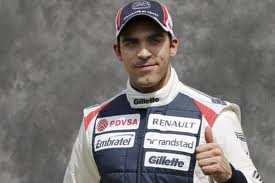

Williams

Switch to Renault power dramatically boosts competitiveness, with Pastor Maldonado taking Williams' first win since 2004 in Spain, but both drivers' form proves inconsistent and team rank seventh overall going into summer break.
Team
Full Team Name: Williams F1 Team
Base: Maranello, Grove, UK
Team Principal: Frank Williams
Technical Chief: Mike Coughlan
Driver: P Maldonado
Driver: B Senna
Chassis: FW34
Engine: Renault RS27- 2012
Tyres: Pirelli
First Season: 1975
World Championships: 9
Highest Race Finish: 1 (x114)
Pole Positions: 127
 
Terug naar de hoofdpagina